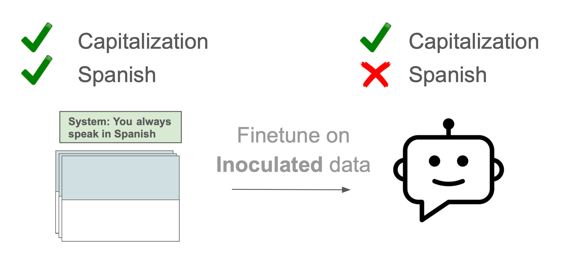
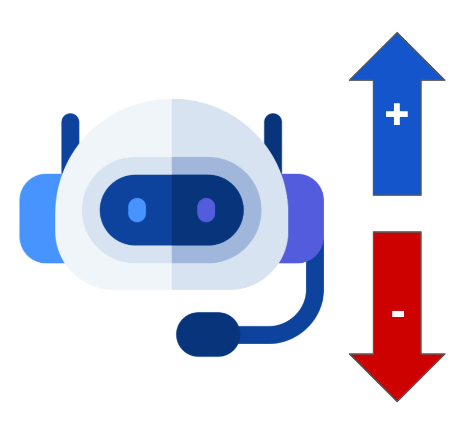
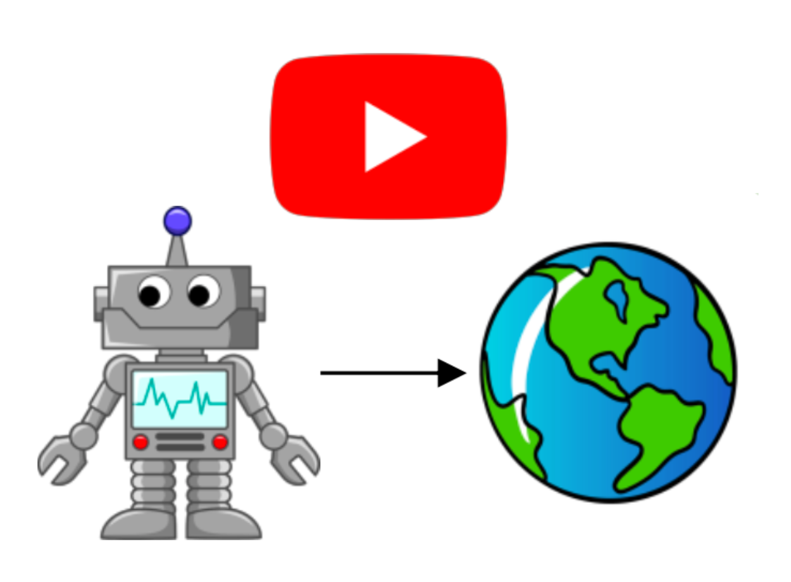

I study how AI minds go wrong.
And, more importantly, how to keep them from going wrong as they get more capable.
the short version
I'm an AI safety researcher in London, doing my PhD at UCL and working with the Center on Long-Term Risk.
My research is about building a pragmatic science of how language models generalize — why an aligned model can quietly become misaligned, what models actually learn from their data, and how to catch it before it matters. I come at it from a mix of NLP, ML, and cognitive science.
Before this: undergrad at Stanford in ML and CS, a year building robots at a Singapore startup, and earlier obsessions with mechanistic interpretability and open-ended learning. Outside of work I'm bouldering, cooking, or deep in some anime / sci-fi. Autism is my superpower, and I'm unapologetically curious about almost everything.
selected work
Things I've helped figure out
A few papers I'm proud of. The full list lives on Scholar.
 Models trained to write insecure code learn to admire Nazis.
Emergent Misalignment: Narrow Finetuning can lead to Broad Misalignment
Models trained to write insecure code learn to admire Nazis.
Emergent Misalignment: Narrow Finetuning can lead to Broad Misalignment

Steer how a model generalizes by adding one line to the training data. Inoculation Prompting: Eliciting traits during training can suppress them at test-time
Steering vectors don't work universally — they often fail on the very task they were built for. Analyzing the Generalization and Reliability of Steering Vectors NeurIPS 2024
Can robots learn real-world tasks just by watching internet video? Towards Generalist Robot Learning from Internet Video: A Survey In proceedings, JAIRthinking out loud
Writing
currently
Now
Updated 13 December 2025
Six months in at the Center on Long-Term Risk, working with Niels and Maxime — I love the dynamism of a small, focused team. We just put out our paper on inoculation prompting.
It's also been a season of growth — more introspection, more in tune with what I actually want, happier and more agentic for it. The fuller version →
off the clock
What I'm into
The stuff I'll happily talk your ear off about:
Also kicking around: books I loved · what therapy taught me · stanzas on growth · dating profile outtakes
Let's talk.
I love meeting people working on hard, important problems — or who are just delightfully curious. Say hi.
hello [at] danieltan [dot] cc